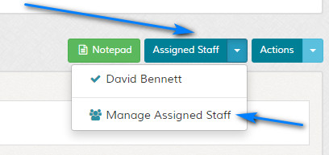
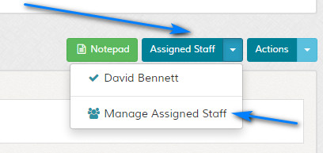

View Ticket
Overview
Enables viewing of support ticket by support team. Please read carefully. Click example images to display full size version in new tab/window.
{kind=link}
Actions
Add Reply - When clicked slides page to reply area. Clicking the crosshair icon in the text area will expand the textarea. Useful on small devices.
Edit Ticket - Edit ticket. More below.
Print Ticket - Shows print friendly view of ticket.
Close - Closes ticket. Ticket can be re-opened by visitor if this option is used.
Lock - Locks ticket. Ticket cannot be re-opened by visitor if this option is used. If a ticket is locked, admin staff can still add replies.
Create Dispute - If the dispute system is enabled, this option will appear. Turns standard ticket into dispute.
Notes - For backend notes. If clicked reveals the notepad area. See following screenshot.
Edit Ticket - Edit ticket. More below.
Print Ticket - Shows print friendly view of ticket.
Close - Closes ticket. Ticket can be re-opened by visitor if this option is used.
Lock - Locks ticket. Ticket cannot be re-opened by visitor if this option is used. If a ticket is locked, admin staff can still add replies.
Create Dispute - If the dispute system is enabled, this option will appear. Turns standard ticket into dispute.
Notes - For backend notes. If clicked reveals the notepad area. See following screenshot.
Edit Ticket
A ticket can easily be edited when the edit link is clicked via the "Actions" dropdown. More info on ticket editing here.
Attachments / Custom Fields
To view custom fields or attachments (if applicable), click the icons at the base of the ticket entry. See first screenshot.
Ticket Assignment
If a ticket has been assigned, a dropdown called "Assigned Staff" will appear. Click this to reveal the support staff currently assigned to the ticket. Click "Manage Assigned Staff" to load
the ticket edit screen to update assigned staff.


Reply View
{kind=link}
Work Time
If the worktime option is enabled in the settings, the total work time is displayed at the top of the ticket page.
A timer is shown beneath the reply box with the additional time currently worked. This is added to the total time when updated. Depending on user permissions, the controls may not be seen.
{kind=link}
A timer is shown beneath the reply box with the additional time currently worked. This is added to the total time when updated. Depending on user permissions, the controls may not be seen.
{kind=link}
Attachments View
If a reply or ticket has attachments, the attachments link will be clickable to reveal the attachment management area for that post.
Use the delete links to remove attachments and the download links to download attachment. If a file doesn`t exist, a message will be shown that the file is missing.
Image mime types will have a view option next to the filesize for one click easy viewing. This can be disabled in the 'control/options.php' file if you prefer. This option is available for admin ONLY as it reveals the full http path.
{kind=link}
Use the delete links to remove attachments and the download links to download attachment. If a file doesn`t exist, a message will be shown that the file is missing.
Image mime types will have a view option next to the filesize for one click easy viewing. This can be disabled in the 'control/options.php' file if you prefer. This option is available for admin ONLY as it reveals the full http path.
Support Team Reply Area
{kind=link}
Custom Fields - Custom field data will appear if custom fields are present. Note that there are no restrictions on admin replies, no custom fields are required.
BB Code - Enables code formatting. Always enabled for admin. More info on BB code here.
Attachments - Attachments area. No restrictions for admin. Follow on screen instructions.
Standard Responses - Standard responses button will appear if standard responses exist. On the standard responses tab, use the "Load Standard Response - Enter Keyword" to locate an existing standard response. Search is performed on standard response title only. Click the results to load.
To save the current comments as a standard response, simply type a title in the "Or Save Current Comments as Standard Response - Enter Title" box.
Options > Merge With Other Ticket - Enter Keyword to Locate Previous Ticket - Enables merging of ticket to another ticket. Disputes (if enabled), cannot be merged. See merge notes below.
Options > Status - Status of ticket after reply is added.
Options > Email Notification - If checked, sends all email notifications of reply to visitor.
Options > Write to Ticket History - ONLY available for administrators. All other team members have all actions written to the ticket history by default. See information on ticket history below.
Merging Tickets
Here you can merge this ticket with another one after the reply is added. If merged, reply is added to specified ticket and current ticket is deleted.
On the "Options" tab in the "Merge With Other Ticket - Enter Keyword to Locate Previous Ticket" box, type keyword to locate ticket. Search is performed on ticket subject, id and ticket number (if random).
The button will change to denote you are adding a reply AND merging. A prompt will appear to confirm your action.
Note that tickets can only be merged with tickets with the SAME email address. After merging, you will be directed to the ticket you have merged to.
If the dispute system is enabled and the ticket is a dispute, the merge option isn`t available.
On the "Options" tab in the "Merge With Other Ticket - Enter Keyword to Locate Previous Ticket" box, type keyword to locate ticket. Search is performed on ticket subject, id and ticket number (if random).
{kind=link}
The button will change to denote you are adding a reply AND merging. A prompt will appear to confirm your action.
{kind=link}
Note that tickets can only be merged with tickets with the SAME email address. After merging, you will be directed to the ticket you have merged to.
If the dispute system is enabled and the ticket is a dispute, the merge option isn`t available.
Staff Notifications
Via the 'Other/Staff Notifications' option you can choose to inform other staff members that this ticket has been updated. This ONLY appears if you have at least 1 other staff member
with email notifications enabled and they have permssion to view this option (always shown to admins). ALL available staff members are shown, regardless of ticket restrictions. If you send
notification to a member who does not have ticket access, permissions will prevent them from seeing it when they log in.
Click the 'Save Selections' option to save your selections. This will be carried over to ALL future ticket updates unless you remove the selections. To clear, uncheck all staff on the next update and again click 'Save Selections'.
Note that this is NOT affected by the 'Email Notification' option on the 'Options' tab.
{kind=link}
Click the 'Save Selections' option to save your selections. This will be carried over to ALL future ticket updates unless you remove the selections. To clear, uncheck all staff on the next update and again click 'Save Selections'.
Note that this is NOT affected by the 'Email Notification' option on the 'Options' tab.
Ticket History
The ticket history logs all ticket actions. This can be disabled in the settings.
If delete privileges are enabled, a icon appears next to an entry and it can be deleted.
Actions > Add Entry - Easily add custom entry to ticket history.
Actions > Export History to CSV - Enables exporting of history view to CSV.
Actions > Clear All - Appears if delete privileges are enabled. If clicked, all history is cleared. A prompt appears asking you to confirm your action. This option is NOT reversible.
{kind=link}
If delete privileges are enabled, a icon appears next to an entry and it can be deleted.
Actions > Add Entry - Easily add custom entry to ticket history.
Actions > Export History to CSV - Enables exporting of history view to CSV.
Actions > Clear All - Appears if delete privileges are enabled. If clicked, all history is cleared. A prompt appears asking you to confirm your action. This option is NOT reversible.